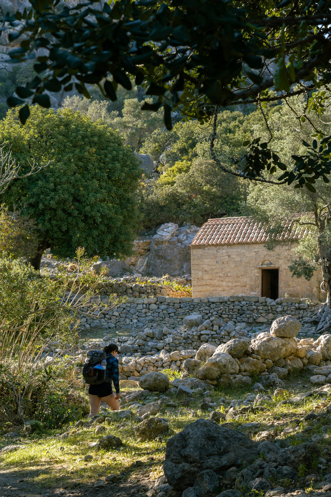
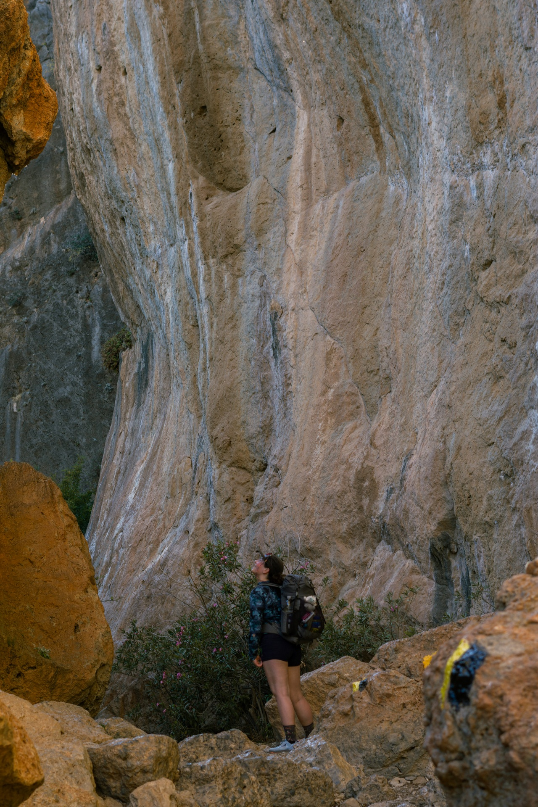
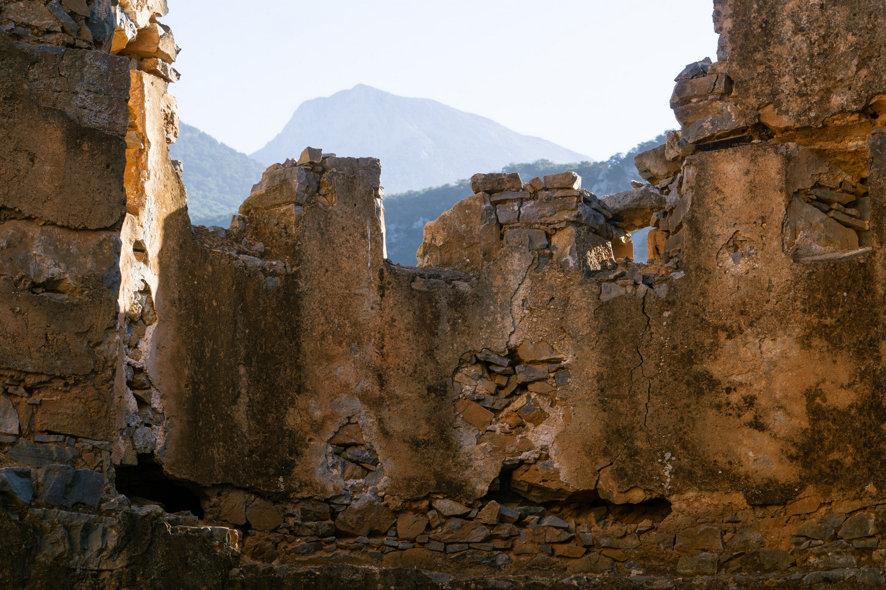
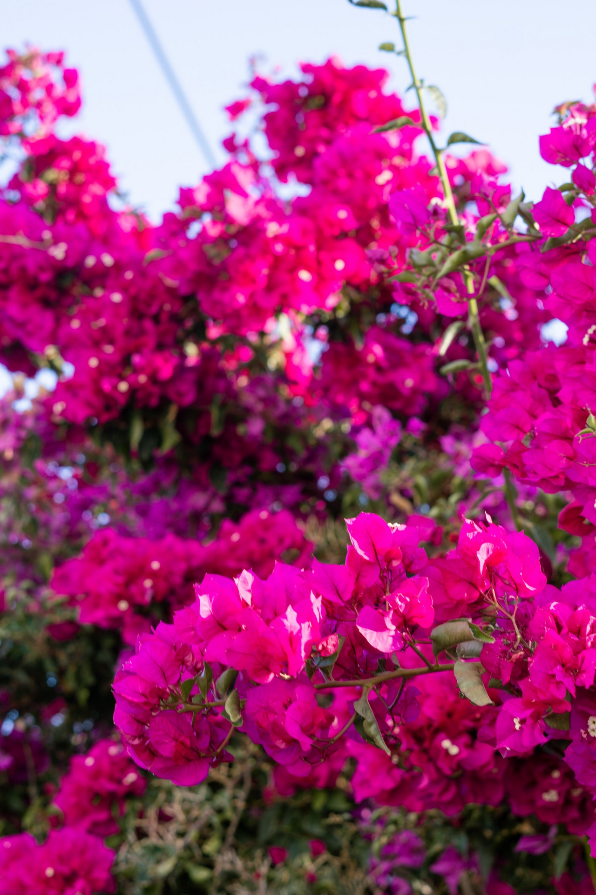

In April of 2024, post a mountain cartography conference in Zakopane Poland and a roadtrip with my mom from Northern Greece to Athens, I found myself hopping on a small plane with Jenevieve to the Island of Crete.
We arrived in the Northern city of Chania, where we found ourselves with no concrete plan but excited to explore the island and the mountains of Crete.
The place we were staying was adorable and right in the city center, and although we hadn't planned to stay for more than a night, we ended up taking a few days to get settled. We enjoyed the city; ate fresh market food, and wandered small streets while planning logistics and getting ready to set out.
Chania has a gorgeously colorful 14th century built Venetian port at the center of the city. From the port you can see into the White Mountains; "Lefka Ori", where we would be hiking a few days later on the e4.
Elafonisi Beach - Sougia: April 13-14th
We took the bus from Chania to outside Kissamos. All of the names we encountered out here seemed to all have a multitude of spellings, which made public transit confusing but still quite friendly. We had accidentally gotten off at the wrong stop, but easily got a hitch to a major intersection and then caught a ride with an American and a German here on vacation all the way to Elafonisi.
The first section of the e4 from Elafonisi heading east was rocky, sandy, and hot; but beautiful, and I was happy to be walking.
The trail was quiet, except for the color of spring wildflowers and the occasional nudist couple swimming in the ocean.
Our first night camping on trail was spent a few miles outside of Paleochora, tucked on a cliff above the sea, with a little church and goats as neighbors. We woke up and swam in a quiet cove before the sun rose to start our second day on trail.
The trail from our campsite to town followed a lovely little road littered with goats.
We caught a ride past some dusty roads into Paleochora, with a man named Yannis. Breakfast was delicious.

We caught our first glimpse of the White Mountains from the Southern coast as we crested the hill heading into Lissos.
 Sougia - Agia Roumeli : April 15-17th

On our way out of Sougia, we walked up a dry riverbed, towards the gorge of Agia Irini. At the last stretch of road before we left pavement we happened upon a taverna, and went all out on breakfast.
This trip was not about completing every mile, so when we crested the hill after climbing out of the lush green, waterless gorge we set our sights on hitching to Omalos. A colorul family from Germany picked us up and we had lovely conversation while avoiding hundreds of sheep on the road. Then to the top of Samaria Gorge, to start an evening walk up and into the hills.

It is crazy how fast you can walk from the sea into the mountains in Crete. We pitched our humble little home at the still closed for the season Kallergi hut. Got all fancy for dinner in my new dress that Jenevieve had made, and watched the sun set over Samaria Gorge.
Our morning walk the next day very much involved being sheepherders for the local flocks. These guys posed quite nicely for a photo.
And then we hit snow...
We had planned on taking a stab at summiting Pachnes, the highest peak in the range. But after the weather turned for the worse; 50 mph wind gusts, with a big storm rolling through and potential rain, we decided the mountains were telling us to leave, and we decided to switch our plans up. Pivotting from a summit and a traverse of the range, we set our sights on Eligia Gorge, which turned out to be a much bigger beast than we had bargained for.
The gorge started off lovely, with flowers, a suprise water source with the first water we had seen all day, and pine trees growing in the riverbed. But as we descended into the slot canyon, the routefinding became harder and harder, we found ourselves cliffed out and backtracking in several sections and we were losing light quickly. We made quick work, practically running down 7 miles of rough terrain to exit the slot canyon before a potential overnight storm.
I didn't take many photos on this section, but we ended up hiking well into the night, pitching under some evergreen trees and konking out after dinner.
The final 3 miles to Agia Roumeli took us nearly 3 hours of walking to slowly piece our way down scree and talus slope to the sea. It felt damn good to see the ocean again.
April 17th & 18th
Agia Roumelli was a quiet coastal town when we walked through. The storm had shut down the regular ferry services and no-one from town was coming or going. I got the impression that the usual hustle and bustle of tourist season is much crazier here. We were greeted with smiles, a pup that wanted to play on the beach all afternoon, a menu that just consisted of Bouleki, Mousakka, Goat with bones and Bouleki, and a supermarket owned by a man named Yannis who had a room for us upstairs.
We poked our heads into the closed Samaria Gorge... a walk for a future trip maybe, but happy with what we had seen of the Whites and excited about a lazier day in town. Everyone we chatted with seemed to be suprised we were here. On a quiet morning walk up to a castle on a hill we got asked if we arrived here by leg or by boat.
Agia Roumeli - Loutro : April 18th
We discovered in Agia Roumelli that it was hard to leave a restaurant without first sipping down at least two shots of Raki. We had lunch in town before we started walking, ate more bouleki, and got the encouragement that we'd be to Loutro in just 5 hours, 2.5 if we finished our Raki.

The walk was delightful. We turned a corner from a man who was showing us his baby goat named Bebe into Aradena Gorge, and walked among wildflowers and cliffs stretching further above our heads than we could see.
The walk was delightful. We turned a corner from a man who was showing us his baby goat named Bebe into Aradena Gorge, and walked among wildflowers and cliffs stretching further above our heads than we could see.
We pitched camp for the night in an old turkish castle on a hill outside of Loutro. We had a castle roommate, a kid named Hugo who was wrapping up a thru hike of the Cretan Way going west. It was lovely to chat with another walker, and we drank 3 euro wine and ate oranges we had gotten from Yannis' store that morning.
Loutro - Hora Skafion - Preveli Beach : April 19th

Lots of herd animals in pretty places.
We walked into Hora Skafion and immediately was struck by the smell of bakery food. We sat and ate for hours, ordering 3 rounds of sandwhiches, baked goods and fresh juice while we thought about what we wanted to do next on the trip. From here, the e4 winds back up into the hills towards Psiloritis; the high point on Crete. Weather looked poor and we were excited about checking some more places on the southern coast out. We decided to give hitching towards Preveli Beach a stab and lucked out with a series of perfect rides: in the truckbed of a greek guy, with a dad who apologized his kiddo only knew Greek, French, and German, no English. Tough for a four year old, and a couple out for a hike. We even saw the family who had given us a ride in Omalos, out for lunch while we were whizzing by in the back of a truck.
We ended up right at Kourtalioti Gorge, which was going to be our goal for the next day, and went for the most magical swim to a waterfall all by ourselves.
Walking from the gorge down to Preveli Beach; our home for the night, was spectacular.
Preveli Beach - Rethymno: April 20th
Expecting a lazy beach morning, instead of a full on attack by geese, we let our guards down at breakfast, and suffered the consequences.
Prevelli beach is well known for it's forest of palm trees, endemic to the Agean Sea. It was a nice rest to lay in the shade. We tried to walk out upstream through the gorge itself but quickly found ourselves in freezing chest deep water and didn't feel safe giving it a stab not knowing conditions or what this gorge looked like.
We enjoyed the day in the sun, and eventually hiked out the easy way, hitched to Rethymno (1 ride!!), found another man name Yannis to stay with and ate the best Gyros in town while watching the sunset over the bay.
Rethymno - Heraklion : April 21st
This day was a transit day between the two big cities of Rethymno and Heraklion. I think we were both feeling a bit out of place, missing the freedom and quiet that comes with living out of a tent and only being in small villages.
This big strawberry was terrifying
April 22nd
We had a day to kill in Heraklion; a city we were not particularly excited about, and after spending very little money on the rest of this trip we decided to treat ourselves to a little tourist day; a trip by ferry to Santorini!
Thira was an hour and a half away and the island was very unlike anything else we had seen while on Crete.
Santorini was a fun way to end the Greece portion of this trip. It was a blast to run around and explore, feeling like we were in some sort of video game, but the cities felt infinetely busier than anywhere we had been on Crete. Back on the ferry to Heraklion, we both passed out, Jenevieve from seasick sedatives and me from exhaustion. That same evening we kicked it to the airport and caught a flight to Amsterdam to celebrate Jenevieve's birthday.
I was thrilled that every leg of the journey on Crete went smoothly. We were met with nothing but kindness, lovely humans, delicious food, and a wildly diverse and gorgeous trail and island to get to know. The e4 on Crete, while not perfectly smoothed out yet, was an incredible way to travel on the Southern Coast, and a pretty special first long walk to go on together.